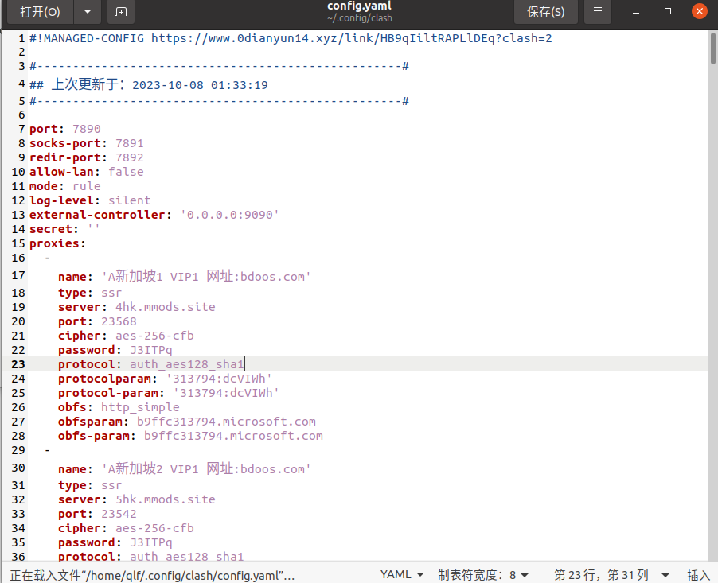
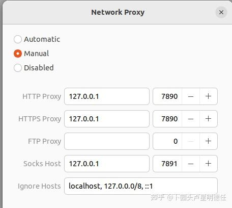
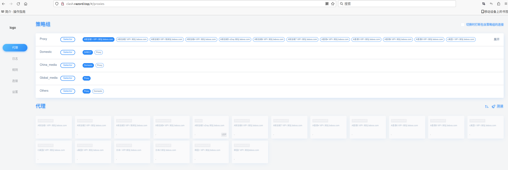

Ubuntu常用工具
[!Tip] 测试系统为 Ubuntu20.04
1 Clash 科学上网
Step 1:
打开终端，输入以下命令下载Clash
wget https://github.com/Dreamacro/clash/releases/download/v1.18.0/clash-linux-amd64-v1.18.0.gz
或者直接官网下载：https://github.com/Dreamacro/clash/releases 选择clash-linux-amd64-v1.18.0.gz
Step 2：
解压缩下载的文件
gunzip clash-linux-amd64-v1.17.0.gz
Step 3(Optional)：
使用以下命令将解压后的文件移动到 /usr/local/bin 目录，并重命名为 clash：
sudo mv clash-linux-amd64-v1.17.0 /usr/local/bin/clash
Step 4：
赋予 Clash 添加执行权限：
sudo chmod +x /usr/local/bin/clash
Step 5：
创建 clash 目录
查看 ~/.config 是否有 clash 目录，如果有则跳过此步；如果没有，使用以下命令创建 Clash 的配置文件目录：
mkdir -p ~/.config/clash
Step 6：
添加订阅地址
curl 订阅地址 > ~/.config/clash/config.yaml
订阅地址找我要
订阅地址添加后如下图：

Step 7：
启动clash
在终端中输入clash启动clash，第一次会提示下载MMDB，如果下载速度慢，可以切换手机热点。下载好了之后就不用再下载了
Can't find MMDB, start download
Step 8：
配置 Ubuntu 网络代理，见下图

Step 9：
节点管理
在浏览器中输入：http://clash.razord.top/#/proxies 进入节点管理界面，见下图，可以选择节点

Step 10：
关闭 clash
在终端中使用ctrl c停止clash即可
2 Ubuntu常用软件
网盘链接：链接：https://pan.baidu.com/s/1z_NDuOqs2twZEiLzw0FRNw?